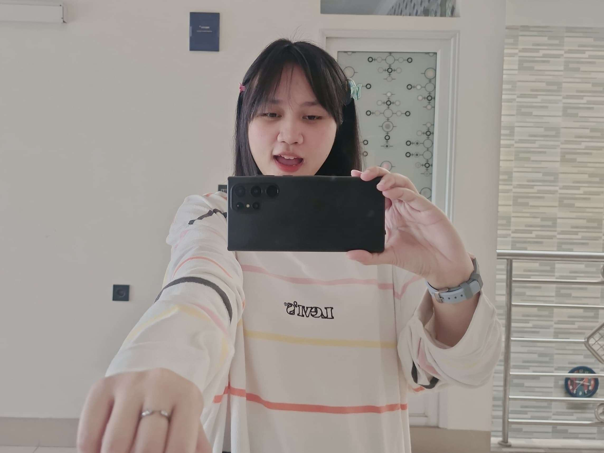

PATUYFLIX CHARACTER DOSSIER • THE MAIN CHARACTER
Siapa Itu Patuy? (Patar) 🌸
Mengenal lebih dekat sosok cantik, manis, gemas, dan paling berharga di hidup Ojen yang merayakan ulang tahun ke-28.

THE STAR
100% MATCH
ONLINE 💕
Putri Fadilla Nur Aini (Patar / Patawu)
Atau biasa disebut pacar ojen yang manis 💕
28 Tahun
Umur Sekarang
7 September
Hari Spesial
Pacar Ojen 💕
Jabatan
Paling Juara
Rating Ojen